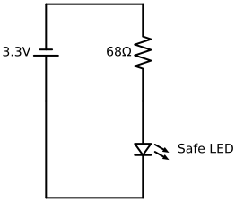
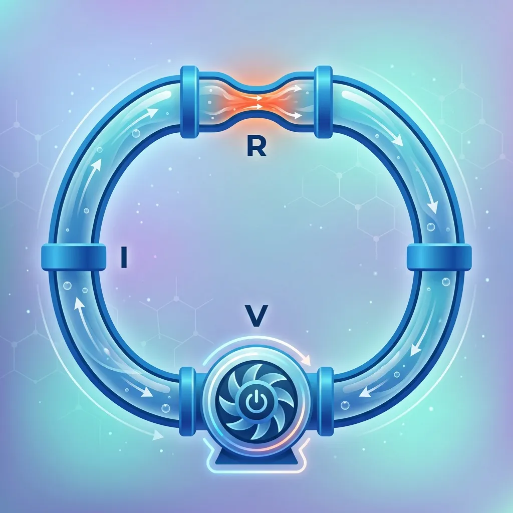
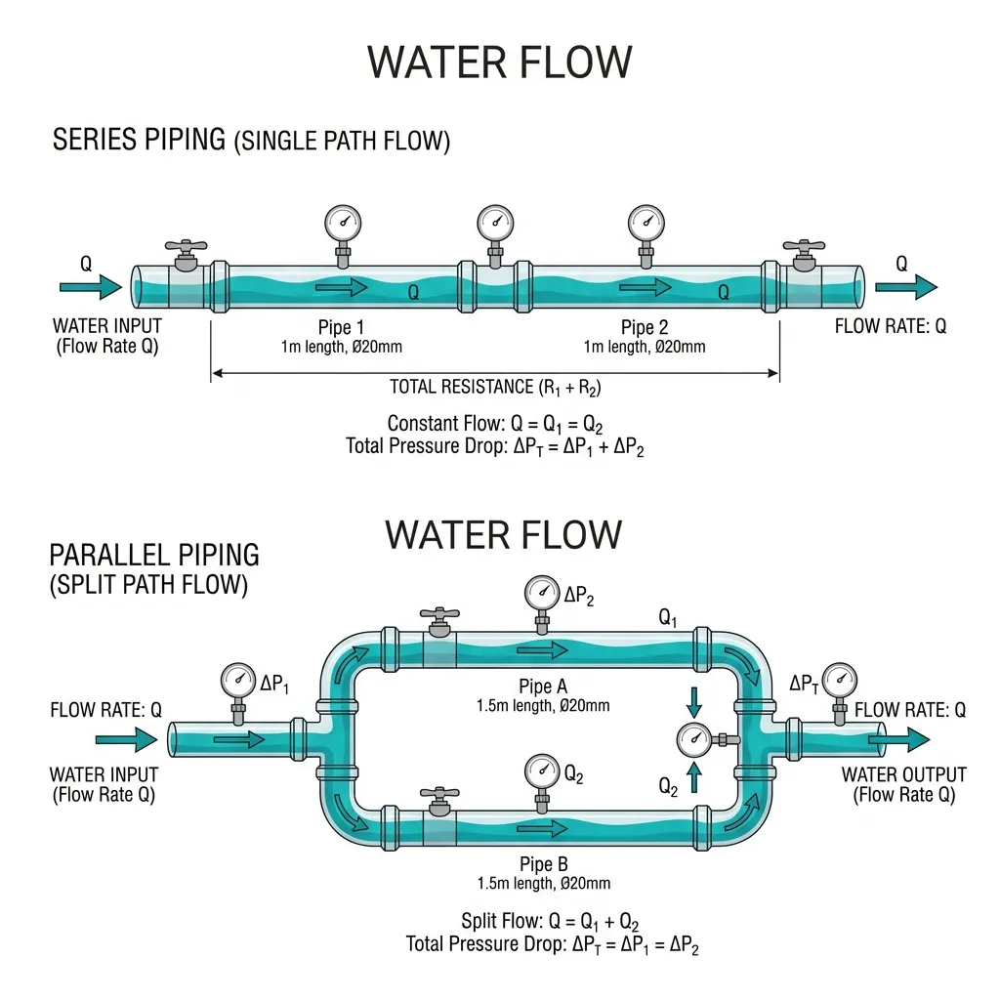
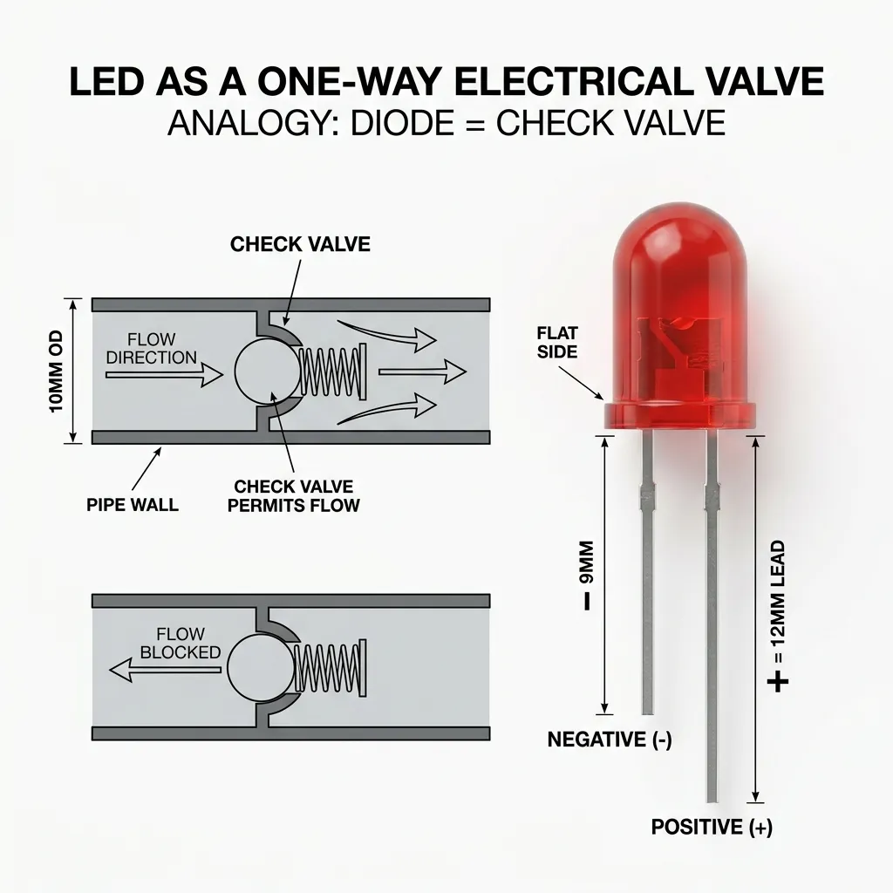
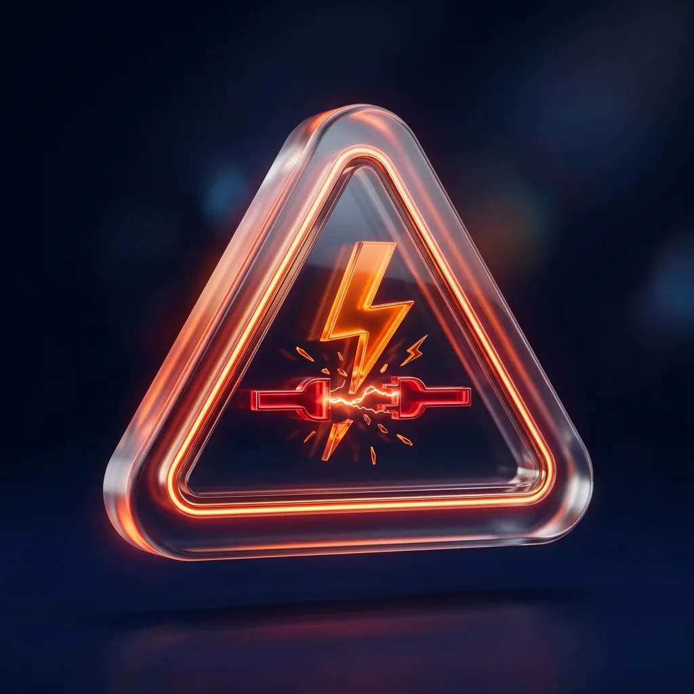
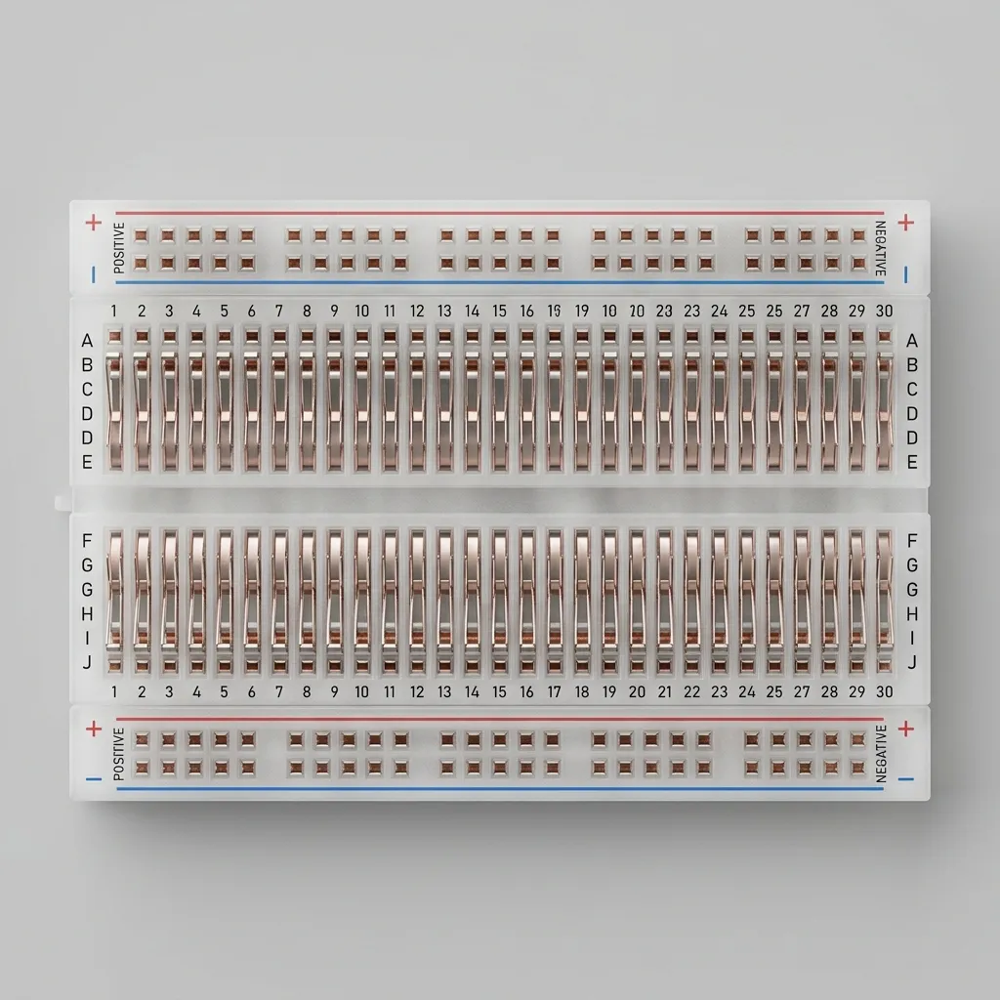
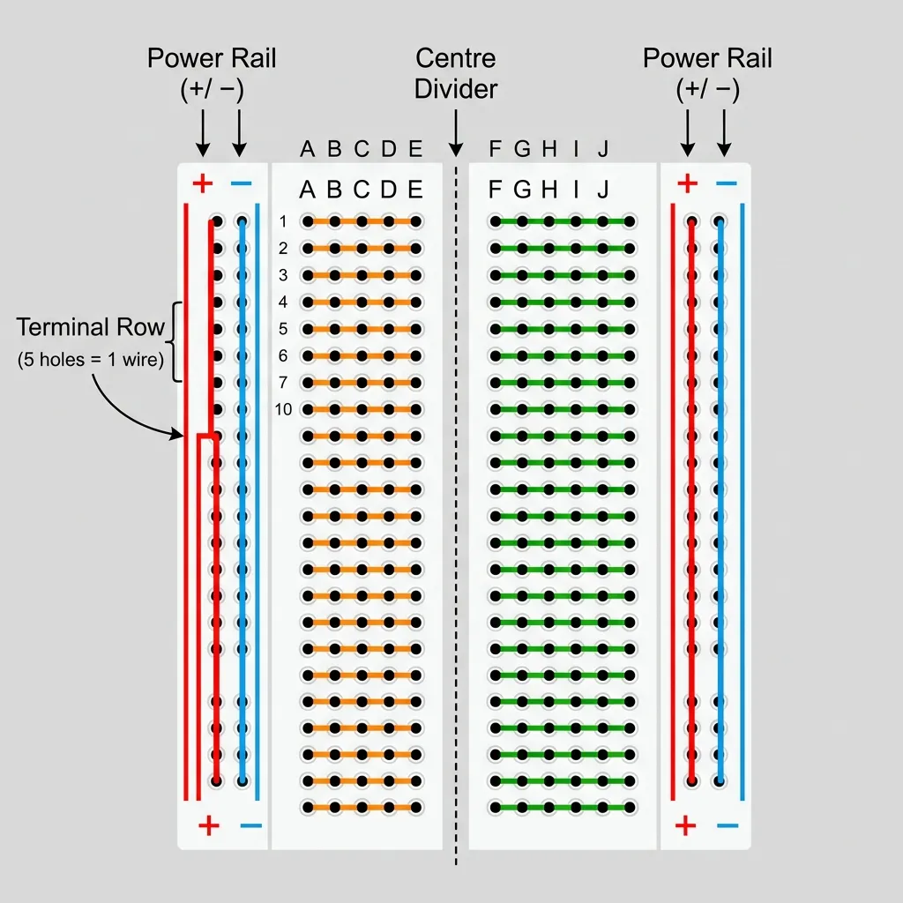
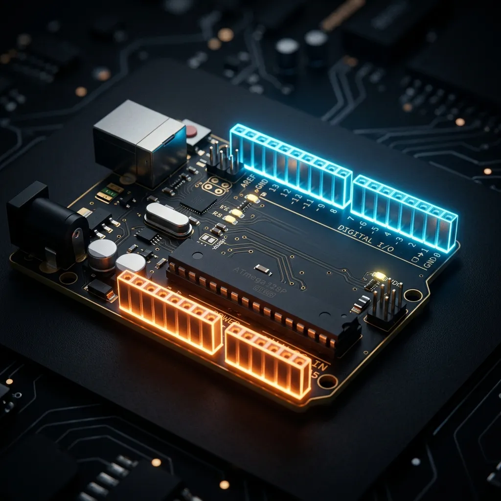

Session 1: Circuits Basics
From Water Pipes to Computer Logic
2026-04-11
Session 1
Circuits Basics — From Water Pipes to Computer Logic
Agenda
- Part 1 — The Water World
- Part 2 — Zooming In
- Part 3 — The Bridge (Water ↔︎ Electrons)
- Part 4 — But They Don’t Touch
- Part 5 — Ohm’s Law: V = I × R
- Part 6 — Components: Bulb, Motor, Switch
- Part 7 — Variable Resistance & The Transistor
- Part 8 — Designing Circuits: From Goal to Schematic
- Part 9 — 0s, 1s, and Arduino
- Part 10 — The Lab: Traffic Light & Automatic Light
- Part 11 — Summary, Homework & AI Onboarding
Part 1 — The Water World
Macro Circuit Simulation
Toggle the pump. Watch the Pressure (Voltage) and Flow (Current) gauges.
The Closed Loop
- The pump creates pressure — the force that pushes the water
- The actual amount of water moving is the flow
- The narrow part of the pipe is resistance — it fights the flow
These three are always connected.
You cannot change one without affecting the others.

- ↑ Pressure → ↑ Flow
- ↑ Resistance → ↓ Flow
Series vs. Parallel Pipes
- Series: Pipes connected in a single line.
- All water must pass through every pipe.
- Same Flow throughout the line.
- Pressure is shared between them.
- Parallel: Pipes connected in a branch.
- Water chooses a path.
- Flow splits between branches.
- Same Pressure at the start of each path.

Exercise 1 — Q1: Narrow Pipe
(recall) If I make the pipe narrower at one point, what happens to the water flow?
Answer: Flow decreases — the narrowing increases resistance, so less water passes through for the same pump pressure.
Exercise 1 — Q2: Second Pump
(recall) If I add a second pump, what happens?
Answer: It depends on how you connect them:
- In Series (one after the other): Pressure increases → flow increases. (Like batteries in a flashlight).
- In Parallel (side-by-side): Pressure stays the same, but you have more total flow capacity. (The pumps share the work).
Exercise 1 — Q3: Cut Pipe
(recall) If I cut the pipe somewhere, what happens?
Answer: Flow stops completely — the loop is broken and water has nowhere to go.
Exercise 1 — Q4: Stronger Pump
(recall) If the pump gets stronger, what happens?
Answer: More pressure → more flow. With the same resistance, higher pressure drives more water through the pipe.
Exercise 2 — Q1: Compensate for Narrowing
(apply) You narrow the pipe a lot. What must the pump do to keep the same flow rate?
Answer: The pump must increase its pressure proportionally — to maintain the same flow against higher resistance, you need more force (higher voltage in the electron world).
Exercise 2 — Q2: All Valves Open
(apply) Someone opens ALL the valves at once. What happens to the flow at each valve?
Answer: The total flow increases but splits between all open paths. Each valve gets less flow than it would alone — parallel paths share the total.
Exercise 2 — Q3: Pressure Before a Narrowing
(design) What happens to the pressure just before a sudden narrowing in the pipe?
Answer: Pressure backs up just before the narrowing — molecules pile up waiting to squeeze through. Analogous to the high voltage level that exists on the upstream side of a resistor before it drops across it.
Part 2 — Zooming In
Micro Pump Simulation
Zoom into the pump impeller. Watch individual particles collide and push each other.
What the Molecules Are Telling You
- Water is not a smooth fluid — it is discrete molecules crowding and pushing
- Pressure is the collective “pushing force” created when molecules pile up and collide tightly together
- Flow is the actual amount of those molecules managing to pass by a specific point every second
- Resistance is energy lost to collisions with the pipe wall — the narrower the pipe, the more collisions per metre
Why this matters for electrons
Current is not a fluid either. It is a wave of pushes through particles already packed into the wire. The pump doesn’t create them — it just gives them a direction.
Exercise 3 — Q1: Blocked Pipe
(apply) If you completely block the pipe, the pump is still running. What happens to the pressure just before the block? What happens to the flow everywhere?
Answer: Pressure reaches maximum just before the block (all pump force with nowhere to go). Flow everywhere = 0 — no complete loop means no movement anywhere in the circuit.
Exercise 3 — Q2: Friction and Heat
(design) What if the molecules were going so fast through a narrow section that the friction made them heat up? What do you think would happen to the pipe material?
Answer: The pipe wall at the narrow section heats up and could melt or deform — exactly what happens to a wire or LED with too much current. This is how a fuse works: the narrow link melts to break the circuit safely.
Part 3 — The Bridge
Water World ↔︎ Electron World
| Water World | Electronics | |
|---|---|---|
| Water molecules | → | Electrons |
| Pump | → | Battery / power supply |
| Pressure | → | Voltage (V) |
| Flow rate | → | Current (A) |
| Narrow pipe | → | Resistance (Ω) |
Same physics. Different scale. Different particles.
The battery doesn’t create electrons — they’re already there. It just creates pressure.
Wait — which direction does current flow?
Electrons (negative charges) actually drift from − to + inside the wire. But engineers defined “current direction” centuries before electrons were discovered — they picked + to −. Both descriptions are correct. In this course we always follow the + to − convention.
See the Translation Live
Use the Voltage and Resistance sliders. Watch Current change — exactly as in the water world.
Part 4 — But They Don’t Touch
Electromagnetic Repulsion Simulation
Watch electrons repel each other before ever touching. Connect the battery — see the drift begin.
Conductors vs Insulators
Conductors (e.g. copper)
- Outer electrons are loosely bound
- They roam freely through the material
- Apply voltage → they drift together → current flows
Why metals conduct
Metallic bonds leave outer electrons free to drift. That freedom is exactly what makes a wire a wire.
Insulators (e.g. rubber, glass)
- Electrons are locked tightly to their atoms
- No free electrons → no drift → no current
High enough voltage breaks insulators
Rip the electrons free and even air conducts. That is lightning.
Exercise 5 — Q1: Where is the Friction?
(apply) If electrons push each other without touching, why does a wire feel like it has resistance? Where is the “friction” really coming from?
Answer: Electrons collide with the metal’s lattice of positive ions (atoms). Each collision transfers kinetic energy to the lattice as heat — that is resistance. The friction is not between electrons; it is between electrons and the stationary atomic structure.
Exercise 5 — Q2: Breaking an Insulator
(design) An insulator has its electrons locked tight. What would happen if you applied an extremely high voltage — high enough to rip those electrons free? (Think: lightning through air.)
Answer: The insulator breaks down — electrons are violently stripped from their atoms and a sudden rush of current flows. Air does exactly this during lightning: enormous voltage rips electrons free and the air briefly becomes a conductor.
Part 5 — The Math
Ohm’s Law
V = I × R
Three Forms of the Same Truth
You only need one formula — rearrange for what you don’t know:
| Find | Formula | Units |
|---|---|---|
| Voltage | V = I × R | Volts (V) |
| Current | I = V / R | Amperes (A) |
| Resistance | R = V / I | Ohms (Ω) |
If pressure goes up and resistance stays the same, flow increases. Same physics. Same formula.
Ohm’s Law Sandbox
Calculate a target Current first. Then adjust the Voltage and Resistance sliders — does the gauge match your math?
Exercise 6 — Q1: Calculate Current
(recall) A battery provides 5 V. A resistor of 100 Ω is connected. How much current flows?
Show your calculation.
Answer: I = V / R = 5 / 100 = 0.05 A (50 mA)
Exercise 6 — Q2: Calculate Resistance
(apply) A circuit has 12 V and the current is 0.1 A. What is the resistance?
Show your calculation.
Answer: R = V / I = 12 / 0.1 = 120 Ω
Exercise 6 — Q3: Halve or Double Resistance
(design) Challenge: If you halve the resistance in a circuit with fixed voltage, what happens to the current? If you double the resistance — what happens?
Answer: Since I = V / R and V is fixed:
- Halve R → current doubles
- Double R → current halves
Current and resistance are inversely proportional.
Part 6 — Components
Micro Light Bulb Simulation
Watch particles squeeze through the jagged filament. As they collide they turn orange/red. At high pressure, the whole area glows.
The Light Bulb
Inside a bulb: a filament — a very thin, very resistive wire (tungsten).
- Electrons squeeze through the narrow filament
- Constant collisions with tungsten atoms → friction → heat
- Filament reaches ~2,500°C → glows → light
Narrow pipe → friction → heat → glow
Same physics as the water world.
The weakest, most resistive part always heats the most.
This is why LEDs need resistors. Without one: low resistance + fixed voltage = enormous current → burnout in milliseconds.
The LED (Light Emitting Diode)
- An LED is a One-Way Check Valve.
- It only allows current to flow in one direction.
- If connected backward, the “valve” shuts tight → Zero Flow.
Identification
- Long Leg = Positive (+)
- Short Leg (and flat side of plastic) = Negative (−)
- Current must flow from + to −.

Exercise 7 — Q1: Calculate Current (No Resistor)
A student wires an LED directly to 3.3 V with no resistor. The LED has an approximate resistance of ~10 Ω when lit (LEDs are non-ohmic — this is a simplified model for calculation only).
(recall) Using I = V / R, calculate how much current flows.
Answer: I = 3.3 / 10 = 0.33 A = 330 mA
(That is 11× the maximum rated current!)
Exercise 7 — Q2: What Happens to the LED?
Current without a resistor = 330 mA. The LED is rated for a maximum of 30 mA.
(recall) What happens?
Answer: The LED burns out instantly — 330 mA is 11× the maximum. The semiconductor junction overheats in milliseconds and is permanently destroyed.
Exercise 7 — Q3: Filament vs LED
(apply) Why does a tungsten filament survive high temperatures but an LED doesn’t?
Answer: Tungsten has the highest melting point of any metal (~3 422 °C) and is designed to glow. An LED is a semiconductor junction — it converts current to light very efficiently but is destroyed by excess heat. It was never built to survive white-hot temperatures.
Micro Motor Simulation
Watch electrons (particles) interact with the magnetic armature. North (Red) and South (Blue) poles are pushed and pulled by the moving charge.
The Motor
- Moving electrons create a magnetic field
- Inside the motor: permanent magnets on the outside, electromagnets (coils) on the inside
- Current through coils → magnetic field → interacts with permanent magnets
- Opposite poles attract → like poles repel → rotation
- Current flips direction at the right moment → poles flip → constant push-pull → continuous spin
Flow → Magnetic Force → Motion
Electrons moving
↓
Magnetic field created
↓
EM force on magnets
↓
RotationThe Switch
A switch is a gap in the circuit that can be opened or closed.
- Closed (switch on): complete path → current flows
- Open (switch off): broken loop → current = zero
Voltage without current
When a switch is open, voltage still exists across the gap. That is why you can measure it with a multimeter. Current requires a complete path — voltage does not.
Pump running → Voltage exists
Loop complete → Current flows
Loop broken → Current = 0Exercise 8 — Q1: Resistive Heating
(apply) What is the electron-world equivalent?
| Situation | Water world | Electron world |
|---|---|---|
| Water flows fast through thin pipe, pipe gets warm | Friction between molecules and pipe wall | ? |
Answer: Electrons collide with atoms in the resistive wire — kinetic energy converts to heat. This is resistive (Joule) heating: the basis of how a resistor or filament gets hot.
Exercise 8 — Q2: Open Valve
(apply) What is the water-world equivalent?
| Situation | Water world | Electron world |
|---|---|---|
| Flow is completely stopped | ? | Switch in open position |
Answer: A closed gate valve — the valve is physically shut, breaking the loop so water (current) cannot flow.
Exercise 8 — Q3: Paddle Wheel
(apply) What is the electron-world equivalent?
| Situation | Water world | Electron world |
|---|---|---|
| Paddle wheel converts flow to rotation | Water pressure turns the paddle | ? |
Answer: Current through a coil creates a magnetic field → force on permanent magnets → rotation. This is an electric motor.
Exercise 8 — Q4: Melting Section
(apply) What is the water-world equivalent?
| Situation | Water world | Electron world |
|---|---|---|
| A section so narrow it melts | ? | LED with no resistor |
Answer: A pipe section so narrow that friction heats the material until it melts — equivalent to a fuse blowing, or an LED junction destroyed by overcurrent.
Part 7 — The Valve
Variable Resistance: The Potentiometer
- A valve in cross-section: a disc with a hole — rotate it to partially block flow
- In electronics: a potentiometer has a resistive strip + sliding wiper
- Move the wiper → change the resistance → change the current
Where you see this: Volume knobs · Brightness dimmers · Steering sensitivity controls
| Position | Resistance | Current |
|---|---|---|
| Fully open | 0 Ω | Maximum |
| Midpoint | ~250 Ω | Medium |
| Fully closed | Max (e.g. 10 kΩ) | Zero |
The Valve Simulation
Manually rotate the valve. Watch the current change in real time.
The Automatic Valve: The Transistor
Manual Valve (Potentiometer)
- You turn it by hand
- Analog: smooth range of values
- Input: your hand
Transistor
- Electricity turns it — automatically
- A tiny Base current controls a huge Collector current
- 1 mA Base → 200 mA Collector (gain = 200×)
- Input: another electron signal
“A tiny trickle opens the main floodgate.” This is amplification — and it is also logic.
Transistors Make Logic
- Transistor fully ON → effectively zero resistance → current flows → “1”
- Transistor fully OFF → enormous resistance → no current → “0”
A billion of these = a CPU.
Exercise 9 — Q1: Potentiometer at 0 Ω
You have: 5 V supply · LED (20 mA, 2 V drop) · Potentiometer (0–500 Ω) · Fixed 150 Ω resistor
(recall) Potentiometer at 0 Ω: what current flows through the LED? (Use V = 3 V; derived from 5 V supply − 2 V LED drop)
Answer: I = V / R = 3 / (0 + 150) = 0.02 A = 20 mA — LED at rated maximum brightness.
Exercise 9 — Q2: Potentiometer at 500 Ω
You have: 5 V supply · LED (20 mA, 2 V drop) · Potentiometer (0–500 Ω) · Fixed 150 Ω resistor
(apply) Potentiometer at 500 Ω: what current flows?
Answer: I = 3 / (500 + 150) = 3 / 650 ≈ 4.6 mA — LED is very dim, just below usable threshold.
Exercise 9 — Q3: Rotating from 0 to 500 Ω
You have: 5 V supply · LED (20 mA, 2 V drop) · Potentiometer (0–500 Ω) · Fixed 150 Ω resistor
(apply) What does the LED do as you slowly rotate from 0 to 500 Ω?
Answer: The LED dims gradually — from 20 mA (full brightness) down to ~4.6 mA (barely visible). The potentiometer acts as a variable brightness (dimmer) control.
Exercise 9 — Q4: Find the Cut-off
You have: 5 V supply · LED (20 mA, 2 V drop) · Potentiometer (0–500 Ω) · Fixed 150 Ω resistor
(design) At what potentiometer value does current drop below the LED’s minimum threshold (5 mA)?
Answer: I = 3 / (R + 150) < 0.005 → R + 150 > 600 → R > 450 Ω
At 450 Ω the LED falls below 5 mA and effectively goes out.
Exercise 10 — Q1: Transistor Gain
(recall) A transistor has a gain of 200. You apply 0.5 mA to the Base. How much current flows through the Collector?
Answer: I_C = Gain × I_B = 200 × 0.5 mA = 100 mA
A tiny 0.5 mA signal controls a 100 mA load — that is amplification.
Exercise 10 — Q2: Controlling a Motor
(apply) You want to control a 500 mA motor using an Arduino GPIO pin (max 40 mA). Is this possible? What is the transistor’s role?
Answer: Yes — but not directly. The GPIO cannot source 500 mA safely. A transistor with gain ≥ 13 driven by the GPIO switches the 500 mA motor current from a separate supply. The GPIO controls the gate; the transistor carries the load.
Exercise 10 — Q3: ON vs OFF = 1 vs 0
(apply) A transistor is either fully ON (0.1 Ω) or fully OFF (1 000 000 Ω). Which state is “1” and which is “0”?
Answer:
- Fully ON (0.1 Ω) → near-zero resistance → current flows → “1”
- Fully OFF (1 MΩ) → near-infinite resistance → no current → “0”
A Quick Question…
How many numbers are there between 0 and 1?
Can’t be counted… Infinity!
(0.1, 0.11, 0.111, 0.5000001…)
Two Worlds: Analog vs. Digital
Analog — Infinite Steps
- Dimmer switch: 0% to 100% brightness
- Thermometer: any value in a continuous range
- LDR sensor: variable (1 kΩ to 100 kΩ)
Digital — Two States Only
- A light switch: ON or OFF
- A transistor: fully ON or fully OFF
- A GPIO pin: HIGH (3.3 V) or LOW (0 V)
Analog = continuous
Infinite possible values between any two points.
Digital = discrete
Only two possible states. No in-between.
The bridge: A transistor collapses an analog input voltage into a digital decision — above a threshold → 1, below it → 0. A billion of these decisions per second = a CPU.
Part 8 — Circuit Design Principles
The Engineering Design Cycle
Engineering isn’t just “plugging things in”—it’s a deliberate, repeatable cycle of prediction and observation:
- Define the Goal — What should happen?
- Select Components — Which sensors/actuators?
- Draft the Schematic — Logically connect them.
- Calculate Values — Safety first (Ohm’s Law).
- Simulate — Test in Wokwi or Falstad.
- Prototype — Build on a Breadboard.
- Test & Iterate — Find bugs and optimize.
The Language of Design: Schematics
If we want to build a house, we look at a blueprint. In electronics, that’s a Schematic. It shows the logic of the connections.
Why symbols?
- Universal: Read across borders.
- Clear: No messy wire photos.
- Fast: Optimized for drafting.
Standard Symbols
| Component | Symbol | Role |
|---|---|---|
| Power (+V) | Energy Source | |
| Ground (GND) | 0V Reference | |
| Resistor | Current Limiter | |
| LED | Light Emitter | |
| Switch | Path Control | |
| Capacitor | Energy Storage (like a water tank — stores charge briefly; covered in Session 2) |
Schematic Layout Rules
Schematics aren’t random; they follow a strict “gravity” and “reading” direction to prevent head-aches.
1. Vertical Gravity \(\downarrow\)
- High Potential (+V) is at the TOP.
- The Reference (GND) is at the BOTTOM.
- Electricity “falls” downhill.
2. Horizontal Reading \(\rightarrow\)
- Inputs (Sensors) on the Left.
- Outputs (LEDs) on the Right.
Professional Tip
Always draw your “GND” symbols pointing down. It makes the schematic instantly readable as a circuit.
Interactive: Series Flow
Observation: In a series path, current (flow) has nowhere else to go. It must pass through every component in sequence.
Kirchhoff’s Voltage Law (KVL)
Shared Energy
Fundamental Principle: Conservation of Energy
Every volt provided by the power source must be “dropped” (used up) by the components.
Key Concept: In a single loop (Series), the Current (\(I\)) is constant everywhere (\(I_{in} = I_{out}\)), but the Voltage (\(V\)) is shared among components.
\[V_{total} = V_1 + V_2 + \dots\]
For engineers: this is written as \(V_1 + V_2 + \dots = V_{total}\). Every electron must lose all its potential energy before returning to the source.
The Loop Rule
Think of a waterfall. If you start at height \(H\), you must drop a total of \(H\) distance (via one or many falls) before reaching the bottom.
The Math: Series Resistance
In a series circuit, components are connected end-to-end, forming a single path.
The Assumptions
- KCL: Current (\(I\)) is the same everywhere. \(I_{total} = I_1 = I_2 = \dots\)
- KVL: Total voltage equals the sum of drops. \(V_{total} = V_1 + V_2 + \dots\)
The Derivation
- Apply Ohm’s Law (\(V = IR\)) to each: \(V_1 = I \cdot R_1, \quad V_2 = I \cdot R_2 \dots\)
- Substitute into KVL: \(V_{total} = (I \cdot R_1) + (I \cdot R_2) \dots\)
- Use Equivalent Resistance (\(R_{eq}\)): \(I \cdot R_{eq} = I(R_1 + R_2 + \dots)\)
- Divide by \(I\): \(\mathbf{R_{eq} = R_1 + R_2 + \dots + R_n}\)
Interactive: Parallel Flow
Observation: Notice that while the flow (current) splits, the “pressure” (voltage) is available to all branches equally.
Kirchhoff’s Current Law (KCL)
Split Flow
Fundamental Principle: Conservation of Charge
Electric charge cannot be created or destroyed. Whatever current flows into a junction must flow out of it.
Key Concept: In a junction (Parallel), the Voltage (\(V\)) across branches is equal, but the Current (\(I\)) is split (\(I_{in} = I_1 + I_2\)).
\[I_{total} = I_1 + I_2 + \dots\]
For engineers: this is written as \(I_{in} = I_1 + I_2 + \dots\). Nodes are just distribution points for charge; electricity doesn’t “pile up.”
The Junction Rule
Think of parallel pipes. If 1 liter per second enters a T-junction, exactly 1 liter per second must exit through the combined branches.
The Math: Parallel Resistance
In a parallel circuit, resistors are connected across the same two nodes.
The Assumptions
- KVL: Voltage (\(V\)) is identical across all. \(V_{total} = V_1 = V_2 = \dots\)
- KCL: Total current splits among branches. \(I_{total} = I_1 + I_2 + \dots\)
The Derivation
- Apply Ohm’s Law (\(I = V/R\)): \(I_1 = V/R_1, \quad I_2 = V/R_2 \dots\)
- Substitute into KCL: \(I_{total} = \frac{V}{R_1} + \frac{V}{R_2} \dots\)
- Use Equivalent Resistance (\(R_{eq}\)): \(\frac{V}{R_{eq}} = V \left( \frac{1}{R_1} + \frac{1}{R_2} \dots \right)\)
- Divide by \(V\): \(\mathbf{\frac{1}{R_{eq}} = \frac{1}{R_1} + \frac{1}{R_2} + \dots + \frac{1}{R_n}}\)
Summary Table
| Connection | Constant Value | Physical Law Used | Resulting Formula |
|---|---|---|---|
| Series | Current (\(I\)) | KVL (\(V_1 + V_2 + \dots = V_{total}\)) | \(R_{eq} = R_1 + R_2 + \dots\) |
| Parallel | Voltage (\(V\)) | KCL (\(I_{in} = I_1 + I_2 + \dots\)) | \(\frac{1}{R_{eq}} = \frac{1}{R_1} + \frac{1}{R_2} + \dots\) |
Tip
In parallel, the total resistance is ALWAYS smaller than the smallest individual resistor!
Case Study 1: The Robot’s Eyes
The Problem: You want to add two Red LEDs as a robot’s eyes.
Given Information
| Parameter | Value |
|---|---|
| Supply Voltage | 5V battery |
| LED Forward Voltage | 2V each |
| LED Target Current | 20 mA each |
Your decision: Wire them in Series or Parallel?
The Goal
For each wiring option, we need to:
- Find the correct resistor to protect each LED.
- Analyse the voltage across each component and the total current drawn.
Case Study 1 — Option A: Series (Circuit)

The Topology
- KVL: Total voltage supplied (5V) must be shared.
- KCL: Only one path exists; current (\(I\)) is constant.
- Goal: First find the resistor \(R\), then analyse the circuit.
Case Study 1 — Option A: Series (Calculation)
Step-by-Step Calculation
Apply KVL — How much voltage is left for the resistor?
\[V_R = V_{supply} - V_{Eye1} - V_{Eye2} = 5V - 2V - 2V = \mathbf{1V}\]
Apply Ohm’s Law — Find the required resistor
We want \(I = 20\,\text{mA}\) (the LED’s rated current) flowing through the loop: \[R = \frac{V_R}{I} = \frac{1V}{0.02\,A} = \mathbf{50\,\Omega} \rightarrow \text{pick standard } \mathbf{68\,\Omega}\]
Verify — Actual current with chosen resistor
\[I = \frac{V_R}{R} = \frac{1V}{68\,\Omega} \approx \mathbf{14.7\,mA} \quad \text{(safe ✓)}\]
Voltage at each point in the loop
- After resistor: \(5V - 1V = \mathbf{4V}\) remaining
- After Eye 1: \(4V - 2V = \mathbf{2V}\) remaining
- After Eye 2: \(2V - 2V = \mathbf{0V}\) (back to GND ✓)
Case Study 1 — Option B: Parallel (Circuit)
The Topology
- KVL: Each branch gets full pressure (5V).
- KCL: Total current splits among branches.
- Goal: First find the resistor \(R\) for each branch, then sum the currents.
Case Study 1 — Option B: Parallel (Calculation)
Step-by-Step Calculation
Apply KVL — How much voltage falls across each resistor?
Each branch sees the full 5V, and the LED drops 2V: \[V_R = V_{supply} - V_{LED} = 5V - 2V = \mathbf{3V}\]
Apply Ohm’s Law — Find the required resistor per branch
We want \(I = 20\,\text{mA}\) through each LED: \[R = \frac{V_R}{I} = \frac{3V}{0.02\,A} = \mathbf{150\,\Omega} \rightarrow \text{pick standard } \mathbf{150\,\Omega}\]
Verify branch current with chosen resistor
\[I_{Eye1} = \frac{3V}{150\,\Omega} = \mathbf{20\,mA}, \quad I_{Eye2} = \frac{3V}{150\,\Omega} = \mathbf{20\,mA} \quad \text{(safe ✓)}\]
Total current drawn (KCL at junction)
\[I_{total} = I_{Eye1} + I_{Eye2} = 20 + 20 = \mathbf{40\,mA}\]
Case Study 1 — The Verdict
| Series | Parallel | |
|---|---|---|
| Voltage per LED | 2V each (shared from 5V) | 2V each (full 5V available) |
| Current per LED | ~6.7 mA (dimmer) | 20 mA (full brightness) |
| Total Current | ~6.7 mA | 40 mA |
| Battery Life | ✅ Longer | ❌ Drains 6× faster |
| If one LED breaks | ❌ Both go dark | ✅ Other stays on |
Pick Series for battery life. Pick Parallel for reliability and full brightness.
Why do we care? The Predictor
Without these laws, engineering is just guessing. With them, you are a Predictor.
- KVL predicts if you have enough “pressure” to turn things on.
- KCL predicts how long your battery will last.
- Ohm’s Law predicts if your component will survive or explode.
Case Study 2: The Safe LED — Setup
The Problem: An Arduino pin outputs 5V. A Red LED needs 2V and max 20 mA. What resistor protects it?
KVL says: \(V_{supply} = V_{resistor} + V_{LED}\)
The resistor must “absorb” whatever voltage the LED doesn’t use.
What We Know
| Quantity | Value |
|---|---|
| \(V_{supply}\) | 5V |
| \(V_{LED}\) | 2V |
| \(I_{target}\) | 20 mA |
| \(R = ?\) | ❓ |
Case Study 2: Calculating the Resistor (Part 1)
Step 1 — Apply KVL (voltage across the resistor)
\[V_{R} = V_{supply} - V_{LED} = 5V - 2V = \mathbf{3V}\]
Step 2 — Apply Ohm’s Law (find resistance)
\[R = \frac{V_R}{I} = \frac{3V}{0.02\,A} = \mathbf{150\,\Omega}\]
Case Study 2: Calculating the Resistor (Part 2)
Step 3 — Verify current through the circuit
\[I = \frac{V_R}{R} = \frac{3V}{150\,\Omega} = \mathbf{20\,mA} \checkmark\]
Step 4 — The Engineering Choice
Standard resistors: \(150\,\Omega\), \(220\,\Omega\), \(330\,\Omega\)
→ Pick \(220\,\Omega\) to be safe (slightly lower current → longer LED life)
\[I_{actual} = \frac{3V}{220\,\Omega} \approx \mathbf{13.6\,mA} \quad \text{(safe ✓)}\]
DANGER: The Short Circuit
A Short Circuit happens when you connect 5V directly to GND with a bare wire.
- Resistance ≈ 0 \(\Omega\) (no obstacle)
- Flow (Current) ≈ \(\infty\) (dangerous surge!)
This generates intense heat and will fry your Arduino’s chip or your laptop’s USB port instantly.

Rule #1: The Safety Buffer
Never connect 5V to GND directly
Always use a “buffer” component (like a resistor or LED) to regulate the flow of energy.
The Physics (Ohm’s Law)
\(I = V / R = 5V / 0\Omega = \mathbf{\infty A}\)
The Real World
- USB Safety Limit: ~500 mA
- A “Short” pulls: Thousands of mA
Result
The “excess” energy has nowhere to go but into heat. This is why components melt or smell like burning.
The “Finger Test”
Safety Tip
If you build a circuit and a component feels hot to the touch—UNPLUG IT.
Something is wired incorrectly, or a resistor is too small, allowing too much “friction” (heat).
The Detective: Troubleshooting with Laws
When a circuit doesn’t work, don’t just “wiggle the wires.” Use the laws to find the culprit:
The Case of the Dead LED
Clue: You connected everything, but there is no light.
- The KVL Scan: Measure voltage across the Battery.
- Result: 5V. (Energy is entrying).
- The KVL Scan: Measure voltage across the LED.
- Result: 0V. (Wait! Where did the pressure go?)
- The Conclusion: If \(V_{led} = 0\), then according to KVL, the “pressure” is hanging out somewhere else—likely a broken wire or a bad connection that has “Infinite Resistance.”
Scientific Luck
Troubleshooting without laws is luck. Troubleshooting with laws is science.
Meet the Breadboard
A breadboard lets you build circuits without soldering.
The Internal Logic
- Terminal rows (A–J) — Holes in a row are connected.
- Power rails (+ / −) — Run the full length.
- Centre divider — Splits the board in two.

Powering the Board: The Rails
To give your circuit life, you need Pressure (V) and a Drain (GND).
- Red Rail (+): Connect to 5V or 3.3V.
- Blue Rail (−): Connect to GND (The Ground).
Wiring the Rails (Do This First!)
- One wire from Arduino 5V pin → red rail.
- One wire from Arduino GND pin → blue rail.
- Now every row on the board can draw power or connect to ground.
Relative Ground
All voltages are measured relative to GND (0V). Think of it as the water level in the drain — everything flows toward it.

Pro tip
Wire the Rails first! Then you can pull power for your components from anywhere on the long side strips.
Part 9 — 0s, 1s, and Arduino
The Ladder of Abstraction
From transistors to C++ — five rungs:
- Voltage — above ~3V = HIGH (1), below ~1V = LOW (0) (voltages between 1V–3V are undefined — the pin may read 0 or 1 unpredictably; always drive pins to exactly 5V or 0V)
- Binary — 1 bit = on/off · 8 bits = 1 byte = 256 values
- Machine Code — patterns of 0s and 1s the processor reads directly
- Assembly — human-readable commands, assembled to machine code
- C++ — high-level logic, compiled into machine code for the Arduino
C++ is not what the computer runs directly
Your code is compiled — turned into a binary file — containing the 0s and 1s that transistors actually process.
Meet the Arduino Pins
Every pin is a software-defined switch.
OUTPUT — The Driver ⚡
- Forces 5V (HIGH) or 0V (LOW).
- Drives LEDs, motors, buzzers.
INPUT — The Listener 👂
- Measures voltage signals.
- Reads buttons, sensors.
GPIO = General Purpose Input / Output

Programming the Pins
Mode is Mandatory
A pin defaults to Input for safety. If you forget pinMode(pin, OUTPUT), your LED will never light because the pin is “listening,” not “pushing.”
| Code Pattern | Physical Effect |
|---|---|
pinMode(13, OUTPUT) |
Pin 13 configured to drive voltage |
pinMode(12, INPUT) |
Pin 12 configured to listen for voltage |
digitalWrite(13, HIGH) |
Switch Pin 13 ON (5 V) |
digitalWrite(13, LOW) |
Switch Pin 13 OFF (0 V) |
analogRead(A0) |
Read fractional voltage (0–1023) |
Machines Need Everything Defined
The machine has no common sense. You define everything:
- Forget
pinMode? The pin defaults to input — your LED won’t light.
Precision is the machine’s strength. Common sense is yours.
Common Code Mistakes
C++ is very picky. Watch out for these:
- The Missing Semicolon (
;) — Every instruction must end with one. It’s like a period at the end of a sentence. - Case Sensitivity —
digitalWriteis correct.digitalwriteorDigitalWritewill cause an error. - The Curly Braces (
{ }) — They group code together. Every{needs a matching}. - Incorrect Pin Numbers — Make sure the number in your code matches the physical hole on the Arduino.
Error messages are your friends
If your code won’t upload, read the red text at the bottom. It usually tells you exactly which line has the “expected ‘;’” or “was not declared in this scope.”
Exercise 11 — Q1: How Many Pins?
Read this sketch line by line, top to bottom:
(recall) How many pins does this script use?
Answer: 2 — Pin 13 and Pin 12.
Exercise 11 — Q2: Input or Output?
(recall) Are the pins inputs or outputs?
Answer: Both are outputs (OUTPUT). The Arduino drives these pins HIGH or LOW.
Exercise 11 — Q3: Describe the Script
(apply) Describe in plain language what this script does, step by step.
Answer: Pin 13 turns ON → waits 1 second → turns OFF. Then Pin 12 turns ON → waits 0.5 seconds → turns OFF. The loop repeats this forever.
Exercise 11 — Q4: OUTPUT vs INPUT
(apply) What is the difference between OUTPUT and INPUT? What would happen if you forgot pinMode(pin, OUTPUT)?
Answer:
OUTPUT— the Arduino drives the pin to 5 V or 0 VINPUT— the Arduino reads the voltage on the pin; it drives nothing
Forgetting pinMode → pin defaults to input mode → outputs no voltage → LED stays off.
Exercise 11 — Q5: Blink 3 Times
(design) Modify it: How would you make Pin 13’s LED blink 3 times before Pin 12 turns on?
Part 10 — The Lab
Physical Setup: IDE & Ports
Quick Setup Links
Troubleshooting
If your Port is greyed out, try a different USB port or check your cable connection.
Build #1 — Calculate Before You Wire
Before connecting anything, calculate the safe resistor for each LED.
| Component | Analogy | Value |
|---|---|---|
| Arduino Supply | Total Pressure | 5.0 V |
| LED Drop | Turbine “Tax” | 2.0 V |
| Resistor Drop | “Wasted” Pressure | 5.0 − 2.0 = 3.0 V |
| Target Speed | Target Current | 10 mA = 0.01 A |
| Resistor Width | R = 3.0 / 0.01 | 300 Ω |
Closest standard value: 330 Ω ✓
Slightly higher = slightly less current = LED lives longer. Never go lower.
Build #1 — Traffic Light on Wokwi
Build this circuit in Wokwi. Run it. Does the sequence match your code?
Build #1 — Arduino Code
// Define each LED pin
const int red = 2;
const int yellow = 3;
const int green = 4;
void setup() {
pinMode(red, OUTPUT);
pinMode(yellow, OUTPUT);
pinMode(green, OUTPUT);
}
void loop() {
digitalWrite(red, HIGH); delay(5000); // Red ON for 5 s
digitalWrite(red, LOW);
digitalWrite(yellow, HIGH); delay(2000); // Yellow ON for 2 s
digitalWrite(yellow, LOW);
digitalWrite(green, HIGH); delay(5000); // Green ON for 5 s
digitalWrite(green, LOW);
}Extend It with AI
Your traffic light works. Now ask AI to extend it.
“I have an Arduino sketch cycling Red (Pin 2) → Yellow (Pin 3) → Green (Pin 4). I want to add a button on Pin 12 that, when held, keeps the green light on for 10 s instead of 5 s. Show me the updated code and explain what changed.”
The Serial Monitor: Seeing the Invisible
How do you know what the Light Sensor is actually “seeing”? You ask the Arduino to print the numbers to your screen.
- Start Communication: Add
Serial.begin(9600);insetup(). - Print the Value: Use
Serial.println(ldrReading);inloop().
The Glass Window
In the Arduino IDE or Wokwi, look for the Serial Monitor (usually a magnifying glass icon). It opens a window where you can watch the values live!
Floating Pins & Noise
Imagine a sensor wire that isn’t connected to anything. It doesn’t read 0. It acts like an antenna, picking up random electrical noise from the air.
- Floating state: The value “bits” or “bounces” between 0 and 1023 randomly.
- Solution: Use a Pull-up or Pull-down resistor to “tie” the pin to a known voltage (GND or 5V) when no signal is present.
Note
This is why our button lab or sensor lab needs that 10kΩ resistor — it keeps the pin “stable.”
Build #2 — Reading the Light
5V ───── 10 kΩ (Top Pipe) ────●──── LDR (Bottom Drain) ───── GND
↑
Pressure Gauge
(A0)| Light Level | Drain State | Resistance | Gauge Pressure (V) |
|---|---|---|---|
| Bright | Wide Open | LOW | Drops towards GND (0V) |
| Dark | Clogged | HIGH | Builds towards 5V |
Why use two resistors?
Arduino pins cannot directly read resistance. They can only measure Voltage (relative pressure). We MUST use a fixed resistor to create a “bottleneck”. This converts the sensor’s changing resistance into a changing pressure that the Arduino can read!
The ADC — Bridging Analog and Digital
The Arduino thinks in digital (0s and 1s). The LDR gives us analog (a continuous voltage). The ADC (Analog-to-Digital Converter) is the translator.
- The ADC samples the midpoint voltage thousands of times per second
- It maps that voltage to a 10-bit number: 0 → 1023
| Voltage | analogRead() value |
|---|---|
| 0 V (max bright) | 0 |
| 2.5 V (half) | ~512 |
| 5.0 V (max dark) | 1023 |
Why 1023?
10 bits can hold 2¹⁰ = 1,024 values (0 to 1023). Arduino Uno uses 10-bit resolution for its analog pins.
In code
int val = analogRead(A0); — take one sample from analog pin 0 and return the number.
Build #2 — Automatic Light on Wokwi
Click the LDR slider to change light level. Watch the LED respond in real time.
Build #2 — Arduino Code
const int ldrPin = A0;
const int ledPin = 12;
int DARK_THRESHOLD = 600; // 0–1023; tune this in class
void setup() {
pinMode(ledPin, OUTPUT);
}
void loop() {
int ldrReading = analogRead(ldrPin); // 0 = bright, 1023 = dark (counter-intuitive!)
if (ldrReading > DARK_THRESHOLD) {
digitalWrite(ledPin, HIGH); // dark (high value) → LED ON
} else {
digitalWrite(ledPin, LOW); // bright (low value) → LED OFF
}
delay(100);
}Exercise 13 — Q1: ADC Voltage
(recall) What voltage does analogRead() = 512 represent? (Hint: it is half the full 5.0 V range)
Answer: 512 is half of 1023 ≈ half-scale → 2.5 V (half of 5.0 V).
Exercise 13 — Q2: Change the Threshold
(apply) DARK_THRESHOLD is changed to 800. Does the LED now switch on in dimmer or brighter conditions? Why?
Answer: Dimmer — the sensor must return a higher value (800) before the LED switches on. Higher ADC values mean less light, so the room must be darker than before to trigger the LED.
Exercise 13 — Q3: Add a Second LED
(apply) Add a second green LED on Pin 11 that turns ON when the room is bright. Write the extra two lines of code.
Exercise 13 — Q4: Stabilising Noisy Readings
(design) The sensor reading can bounce slightly (noise). How could you use multiple readings or delay() to make the response more stable?
Part 11 — Bringing It All Back
The Master Translation Table
| Concept | Water Analogy | Electronics Reality |
|---|---|---|
| Voltage (V) | Pump pressure | Force pushing electrons |
| Current (I) | Flow rate | Electrons per second (Amperes) |
| Resistance (R) | Narrow pipe | Opposition to electron flow (Ohms) |
| Ohm’s Law | P = F × R | V = I × R |
| Open circuit | Cut pipe | No complete path, no current |
| Short circuit | Removed all pipes | Near-zero resistance, huge current |
| LED / Bulb | Friction heating pipe | Resistance → heat → light |
| LED Polarity | One-way check valve | Current only flows one way (+ to −) |
| Series | Pipes in a single line | Components in a single path (Same Current) |
| Parallel | Branching pipes | Components side-by-side (Same Voltage) |
| Motor | Paddle wheel | EM force drives magnets → rotation |
| Switch | Gate valve | Opens / closes the electron path |
| Variable resistor | Valve | Adjustable resistance, adjustable current |
| Transistor | Electron-controlled valve | Small current controls large current |
| Binary | Open / closed valve | HIGH / LOW voltage states |
| C++ | Instructions to the processor | High-level language the compiler translates |
Homework
Part A — Calculations
- A 9V battery + 270Ω resistor. What current flows?
- A circuit draws 50mA from 5V. What is the total resistance?
- Dim an LED to 10mA using a 5V Digital pin (LED drops 2V). What resistor do you need?
- A motor needs 500mA. Can an Arduino Digital pin (max 20–40mA) drive it directly? Use AI to explain the transistor solution.
Part B — Observation
Find 3 places in your home where a reactive system turns on/off based on a sensor. For each: What is the sensor? What is the action? Write 3-line C++ pseudo-code for how it might work.
AI Onboarding — Your Lab Partner
4 Ways to Use AI in This Course
In this course, AI is a senior engineer sitting next to you — not a replacement for thinking.
- Explain — “What does
pinMode(13, OUTPUT)actually do? Use the water analogy.” - Debug — “I’m getting
expected ';' before '}'. Here is my code and wiring description. What did I miss?” - Extend — “My traffic light works. How do I make the yellow light pulse slowly like a heartbeat?”
- Generate — “Write the boilerplate to set up 3 output pins on an Arduino Uno.”
Setup: Open Antigravity · Log in to your assigned account · First prompt: introduce yourself and ask it to help verify your Ohm’s Law calculations.
Questions?
🙋